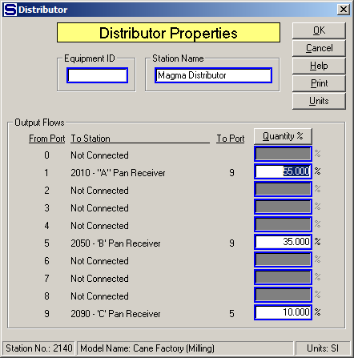

Equipment ID An equipment ID of up to 11 characters can be used to identify the station with an actual station in the process. Any combination of numbers and letters that are used in the factory/refinery to identify equipment can be entered. For example, Equipment ID = 123.456A. It is not necessary to make an entry in the Equipment ID field if the station in the model does not have a corresponding station in the factory/refinery.
Station Name A name of up to 20 characters must be entered for the station. For example, Station Name = 1st Vapor Distri.
Output Flows Each output port from the distributor that is connected to a flow stream has entries for Goes To, Station Name, Port No. and Quantity (kg/hr, or lb/hr).
From Port Port on the distributor station from which the output flow is connected.
To Station Station number and name of the destination station for the output flow.
To Port Input port number of the destination station for the output flow going into the destination station.
Quantity kg/hr (or lb/hr) Output flow quantity in weight units. Enter the quantity of flow that goes out the distributor to the station identified by the To Station text. Switch to percent (%) by left clicking on the "Quantity kg/hr" (or "Quantity lb/hr" when US units are being used) button, or pressing the Alt-Q keys. If any of the output flows are required flows, then percent values cannot be used - only weight quantities can be entered. Clicking on the Quantity kg/hr (or lb/hr) button will cause all entries in the quantity column to be zeroed when the switch is made to percent values.

Quantity % Output flow quantity in percent (%). Enter the percent of the input flow into the distributor that goes out of the distributor identified by the Goes To and Station Name values. The percentage values entered must add up to 100%. If any of the output flows are required flows, percent values cannot be used. Clicking on the "Quantity %" button will cause all entries in the quantity column to be zeroed when the switch is made to weight values. The window above shows entries for quantity in percents.